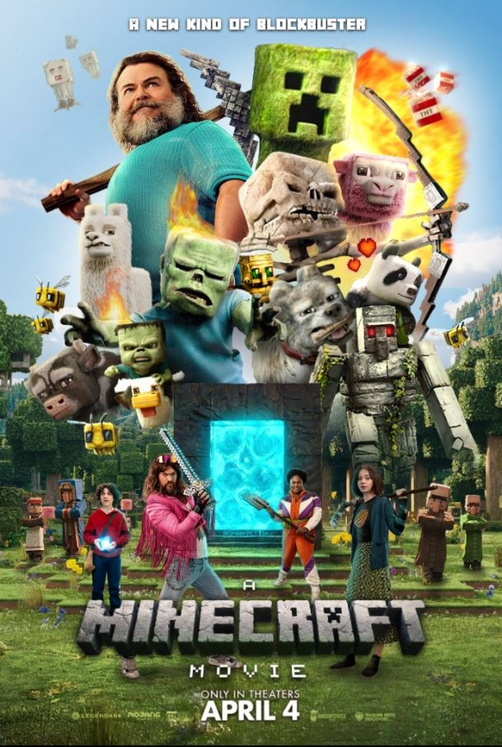
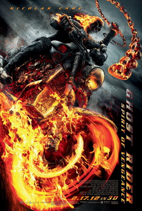
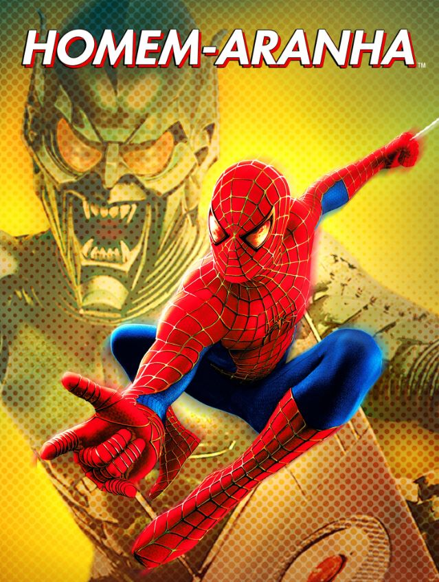
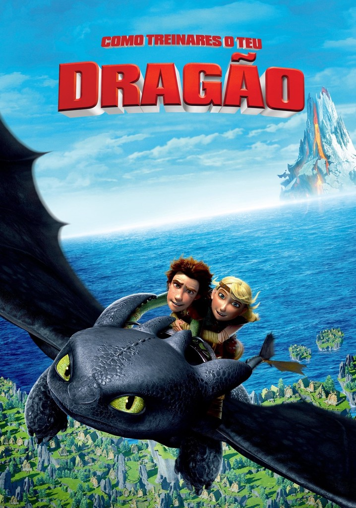
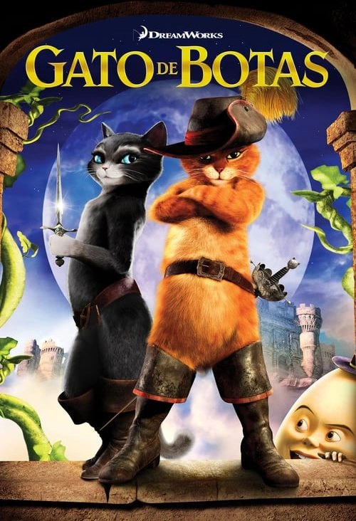

Minecraft o Filme
Henry, um menino inventor e curioso, encontra um artefato místico em um lugar inesperado, tal objeto o leva para outra dimensão, junto com seus companheiros, o que será que os aguardam?
Nota: ⭐⭐⭐

Motoqueiro Fantasama
Johnny Blaze ressurge na Europa Oriental para proteger um garoto que é o alvo do Diabo. Para salvar a criança e tentar se livrar da sua maldição, ele libera o Motoqueiro Fantasma em uma caçada brutal e incansável.
Nota: ⭐⭐⭐⭐⭐

Homem-Aranha
Após ser picado por uma aranha geneticamente modificada, Peter Parker ganha superpoderes e aprende que "com grandes poderes vêm grandes responsabilidades". Agora deve proteger a vizinhança do terrível Duende Verde.
Nota: ⭐⭐⭐⭐⭐

Vingadores Ultimato
Após o estalo devastador de Thanos, os heróis sobreviventes buscam uma última chance de reverter o caos. Eles se reúnem para uma arriscada viagem no tempo para recuperar as Joias do Infinito, restaurar o universo e enfrentar o Titã Louco em uma batalha épica final.
Nota: ⭐⭐⭐⭐⭐

Como Treinar o Seu Dragão
Em um vilarejo viking que caça dragões, o jovem Soluço desafia a tradição ao fazer amizade com um Fúria da Noite ferido. Juntos, eles tentam provar que humanos e dragões podem coexistir, mudando o destino de seu povo para sempre.
Nota: ⭐⭐⭐⭐⭐

Gato de Botas
Anos antes de conhecer o Shrek, o lendário Gato de Botas embarca em uma jornada para limpar seu nome. Ele se une ao mentor Humpty Dumpty e à habilidosa Kitty Pata-Mansa para roubar os feijões mágicos e encontrar a valiosa Ganso dos Ovos de Ouro.
Nota: ⭐⭐⭐⭐⭐